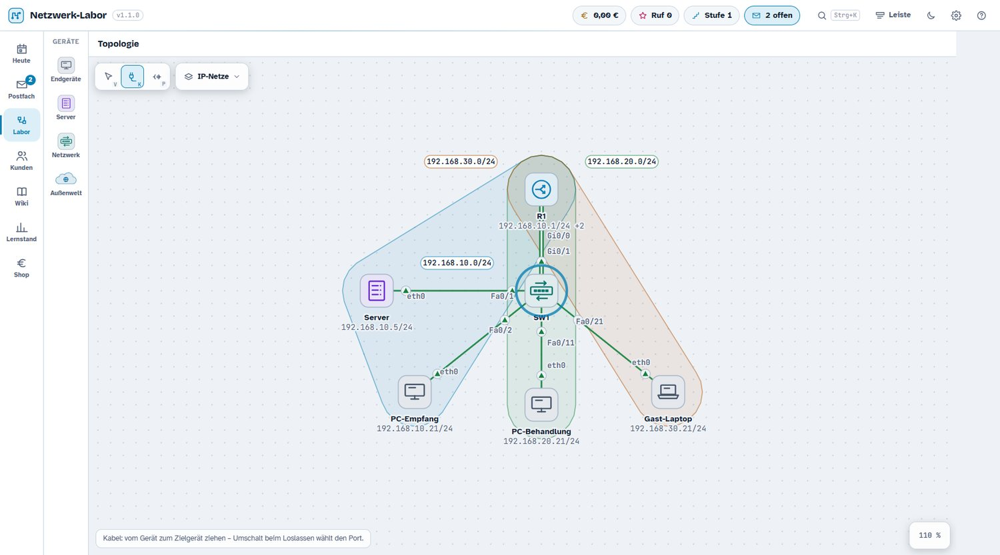
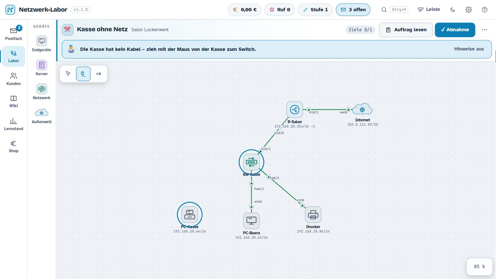
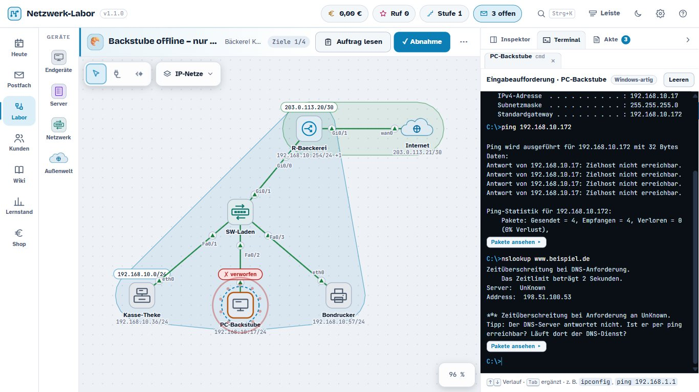
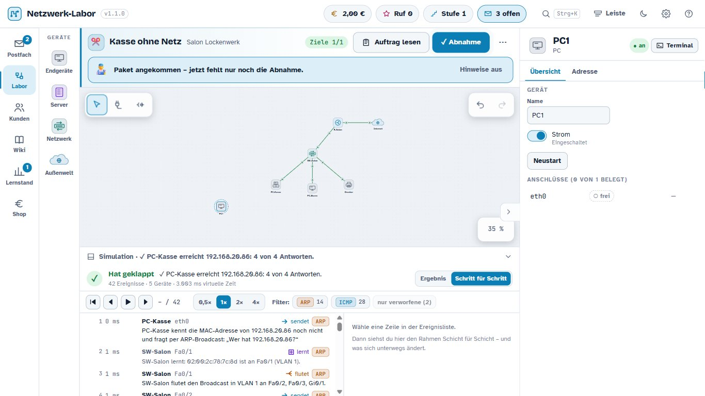
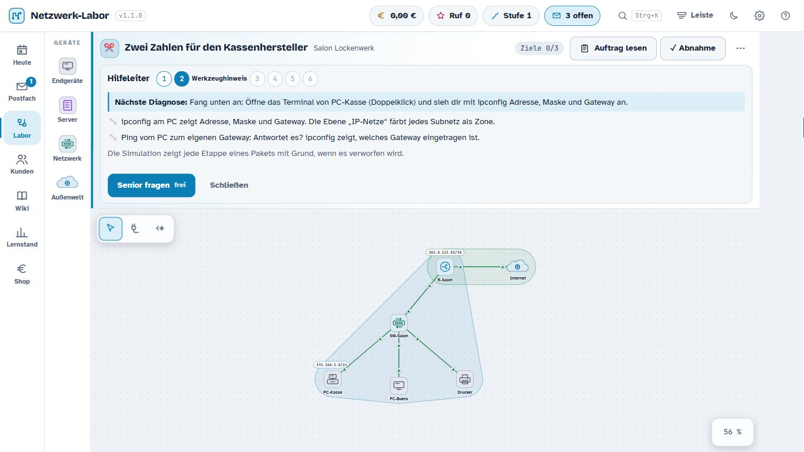
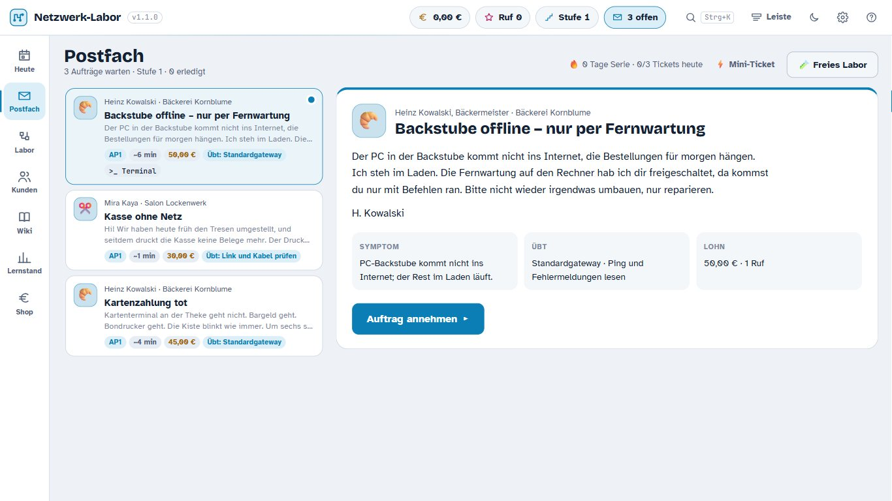
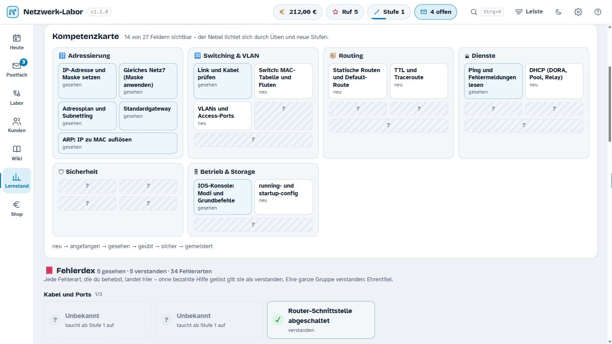

Netzwerk-Labor
Ein Netzwerk-Simulator zum Spielen: Du bist das Ein-Mann-Systemhaus. Kunden schicken Tickets („Die Kasse druckt nicht mehr"), du löst sie in einem echten Simulator — Geräte verkabeln, IP, VLAN, Routen, ACL, NAT, DHCP, DNS, Firewall. Jedes Paket ist wirklich unterwegs, Frame für Frame, und du siehst, wo und warum es verworfen wird.
Lernspiel für Fachinformatiker Systemintegration (IHK AP1/AP2). Kein Cisco-Produkt. Läuft lokal und offline; nichts wird gesendet.


Sofort spielen
| Weg | Wie | Was du brauchst |
|---|---|---|
| Im Browser | vexx-oss.github.io/NetLab öffnen | nur einen Browser |
| Eine Datei | Netzwerk-Labor.html herunterladen (2,1 MB), Doppelklick | nur einen Browser |
| Zum Entpacken | Netzwerk-Labor-2.0.0-Browser.zip: Spiel, die ganze Doku als Ordner, Anleitungen, Lizenztexte | nur einen Browser |
| Windows-Programm | Netzwerk-Labor.exe herunterladen (8,2 MB) — mit Leiste am Bildschirmrand, Tray-Symbol und globalem Tastenkürzel | Windows 10/11 |
Alle Wege liefern dieselbe Fassung 2.0.0. Die Anhänge der Release laden direkt herunter (gemessen: Content-Disposition: attachment) — ein Klick, kein Umweg.
Die drei Anhänge einer Veröffentlichung. (1)
Netzwerk-Labor-2.0.0-Browser.zip— das Spiel als Einzeldatei, die ganze Doku im Ordnerdoku/, Anleitungen und Lizenztexte; kommt aus dem Linux-Job und ist deshalb ohne.exe(tools/paket.py --ohne-exe). (2)Netzwerk-Labor.html— dieselbe Einzeldatei einzeln, für den stabilen Download-Link. (3)Netzwerk-Labor.exe— das Windows-Programm, gebaut vom Windows-Läufer aus dem Tag; der Job prüft vor dem Anhängen, dass dieProductVersionder.exezum Tag passt. Das Browser-ZIP enthält bewusst keine.exe: der Linux-Job hätte sonst die lokale, veraltete Datei ausProgramm/mitverpackt (gemessen am 09.10.2026: sie meldete noch1.2.3).
Zur Windows-
.exe: Sie ist2.0.0und bringt Leiste, Tray und globales Tastenkürzel. Sie hängt seit dem 07.10.2026 automatisch an jeder Veröffentlichung — gebaut von einem Windows-Läufer in.github/workflows/release.yml, damit der Download-Link stabil bleibt:https://github.com/Vexx-oss/NetLab/releases/latest/download/Netzwerk-Labor.exe(die Zahlen des aktuellen Anhangs stehen in der Release und indocs/CHANGELOG.md— Rust-Bauten sind nicht bit-gleich, ein SHA256 gilt deshalb nur für genau den Bau, den er beschreibt). Ins Git gehört sie weiterhin nicht (8 MB je Bau). Die Datei unterProgramm/Netzwerk-Labor.exeist die lokale und derzeit veraltet — sie meldet1.2.3vom 07.10.2026, also den Stand vor der Hilfestellung (8.217.088 B, SHA256E2735D79…5DD68). Nimm die.exeaus der Release, nicht aus dem Arbeitsverzeichnis. Der Start der 1.2.3 war gemessen: die Abnahmepython tools/q-echt.pylief im echten Programm durch — Fenster offen, erster Auftrag mit echter Maus gelöst, 5 ★, 0 Fehler, Fernwartungs-Schild sichtbar. Bilder:Nachweise/1.2-Q/. Für die 1.2.4 ist dieser Lauf nicht wiederholt; die Fassung ist über Tests, Rauchtest und die Seitenprüfung belegt.
Netzwerk-Labor.html liegt direkt im Repositorium, damit der Download einen Klick braucht und nicht erst ein Release. Es ist dieselbe Datei, die auf GitHub Pages läuft — gleiche Prüfsumme, nachgewiesen von python tools/seite-pruefen.py.
Die Einzeldatei ist das ganze Spiel in einer Datei — Schriften eingebettet, kein Nachladen, kein Installieren, kein Internet. Windows, Linux, macOS: alles mit einem Browser. Belegt: 2.269.597 Bytes (2,16 MB), 0 Außenverweise (geprüft über <link>, <script src>, <img src> und url()), Start im echten Browser über file:// gemessen (python tools/starttest.py).
Warum dieselben 2,2 MB zweimal im Git liegen (
Netzwerk-Labor.htmlim Wurzelverzeichnis unddocs/index.html) — bewusst so, nicht versehentlich:docs/index.htmlist die Datei, die GitHub Pages ausliefert (seite.ymlstellt genaudocs/index.htmlunddocs/bilder/zusammen), undNetzwerk-Labor.htmlist der Ein-Klick-Download, auf den dieses README verweist. Beide entstehen aus demselben Bau (python tools/einfach.py) und müssen byte-gleich sein — der Bau schreibt sie nacheinander aus derselben Quelle;python tools/seite-pruefen.pyprüft die Gleichheit. Wer eine davon ändert oder löscht, bricht den jeweils anderen Weg. Die langen Notizen liegen indocs/bzw.docs/entwicklung/und werden nicht veröffentlicht; die Übersicht steht indocs/INHALT.md.
Gegenüber dem Windows-Programm fehlen nur die Fenster-Funktionen: Leiste am Bildschirmrand, Tray-Symbol, immer im Vordergrund, globales Tastenkürzel. Das Spiel sagt das an der passenden Stelle selbst an.
Windows-Programm, falls kein Fenster erscheint:
Integritaet-reparieren.cmddoppelklicken. Der gemessene Grund ist ein Integritätslabel „Niedrig" auf dem Ordner (Überrest einer Werkzeug-Sandbox): die.exeerbt es, läuft als Low-Prozess und darf%LOCALAPPDATA%nicht beschreiben, worauf die WebView2-Laufzeit ihr Profil nicht anlegen kann (failed to create webview,0x800700AA). Details:Nachweise/1.2-Start/BEFUND.md.
Die Spielstände von Browser- und Windows-Fassung sind getrennt und werden nicht geteilt: Browser im localStorage, Windows unter %APPDATA%\de.fisi.netzwerklabor\spielstand.json.
Die ersten fünf Minuten
- Postfach öffnen und die erste Kundenmail lesen.
- „Auftrag annehmen" — das Netz erscheint im Labor.
- Ein Gerät anklicken: rechts zeigt der Inspektor Adressen, Ports, VLAN, Routen, ACL, NAT; der Reiter Konsole ist das IOS-ähnliche Terminal.
- Werkzeuge oben links in der Laborfläche, Kurztaste in Klammern: V auswählen und verschieben · K Kabel verlegen · P Ping-Werkzeug (jeweils von Gerät zu Gerät ziehen). Gerät doppelklicken oder T öffnet sein Terminal.
- Nach einem Ping unten „In Simulation öffnen": das Paket Schritt für Schritt, Schicht für Schicht.
- Zum Schluss „Abnahme anfordern" — der Kunde prüft selbst nach, auch ob du dabei etwas anderes kaputt gemacht hast.
Fehler kosten nichts. Die Hilfeleiter (Checkliste, Werkzeugtipp, Frage vom Senior) ist am Anfang gratis und führt notfalls bis zur vorgeführten Lösung.
 Der erste Auftrag: Ticket, Ziele, Senioren-Hinweis. |
 Konsole und Terminal bei der Fehlersuche. |
 Simulation auf Frame-Ebene: 42 Ereignisse, Filter, PDU-Ansicht. |
 Die Hilfeleiter — Stufe 2 von 6, Senior fragen gratis. |
Weitere Bilder und die Herkunft jeder Aufnahme: docs/bilder/HERKUNFT.md.
Was drin ist
Simulation auf Frame-Ebene. ARP, Switching mit MAC-Lernen, VLAN und 802.1Q, Router-on-a-Stick, statische Routen, ICMP (Timeout gegen unreachable, TTL), ACL, NAT/PAT, DHCP mit Relay, Reservierung, Lease-Laufzeit und Snooping, DNS, TCP-Handshake, HTTP, Firewall mit Zonen und Port-Weiterleitung, Internet als Kulisse, Broadcast-Sturm. Jede Antwort ist aus Paketen hergeleitet, nichts ist vorgetäuscht.
IOS-ähnliche Konsole. Modi, Kurzformen, ?, Tab-Vervollständigung, do, running/startup-config, write erase. Dazu ein Windows-Terminal (ipconfig, ping, tracert, arp -a, nslookup). Befehle, die nicht belegt sind, werden als solche gekennzeichnet.
Aufträge. 37 handgeschriebene Tickets in 5 Karrierestufen (Salon, Bäckerei, Schreibbüro, Arztpraxis, Autohaus, Mittelstand) inklusive 4 Projekten, dazu unbegrenzt generierte Tickets aus 5 Netzvorlagen × 30 Fehlerinjektoren — jede Variante wird automatisch geprüft. 83 Mini-Tickets für die Leiste.
Spielschichten. Hilfeleiter 0–6, Abnahme mit Regressions- und Neustart-Test (nur Gespeichertes überlebt), Sterne, Euro und Ruf, Wartungsverträge, Playbooks, Offline-Bericht, Prüfungstag nach IHK-Notenschlüssel.
Lernen statt Klicken. Können ist die Währung: Wer etwas sicher beherrscht, darf es automatisieren. Wiederholungen kommen im richtigen Abstand zurück (Lernmotor: Leitner-Fächer, 1/3/7/14/30 Tage), Fehler landen im Fehlerheft, 15 Abzeichen belohnen Arbeitsweisen.
 Aufträge kommen als Kundenmail — Symptom, nicht Ursache. |
 Lernstand: Kompetenzkarte und Fehlerheft. |
Mitmachen: holen, bauen, ziehen
Einmal holen (git ist alles, was du brauchst — Node und Python nur zum Bauen und Testen):
git clone https://github.com/Vexx-oss/NetLab.git
cd NetLab
git switch ausbau-1.2 # der Zweig, in dem gearbeitet wird (und der veröffentlicht wird)Spielen ohne zu bauen: vexx-oss.github.io/NetLab öffnen, oder die Einzeldatei aus dem Release herunterladen. Beides ist immer der neueste Stand.
Selbst bauen (die Reihenfolge ist wichtig, bauen.py zuerst):
python bauen.py # src/ -> web/index.html
python tools/einfach.py # web/ -> docs/index.html (dieselbe Datei als Netzwerk-Labor.html)
sh tools/test.sh # 251 Tests, headless in Node
python tools/abnahme.py # die ganze Kette in einem BefehlFür die Android-Fassung kommt das Android-SDK dazu (android/bauen.py, ~5 s), für die Windows-Hülle Rust (cargo tauri build, Minuten). Genaueres steht in docs/Bauen.md.
Updates ziehen — je nachdem, was du benutzt:
| Was du hast | Wie du aktualisierst |
|---|---|
| einen Klon | git pull — danach python bauen.py und python tools/einfach.py, wenn du die Seite selbst baust |
| die Browser-Einzeldatei | neue aus dem Release laden — oder einfach die Seite im Netz benutzen, die ist immer aktuell |
| die App auf dem Telefon | neue .apk aus Programm/ (bzw. vom Release) antippen und über die alte installieren — der versionCode steigt mit jeder Fassung, deshalb klappt das ohne Deinstallieren |
| das Windows-Programm | git pull, dann pwsh -File shell/entwickeln.ps1 (Debug, Sekunden) oder cargo tauri build in shell/src-tauri (Auslieferung) |
Wenn du selbst etwas änderst: arbeite auf ausbau-1.2, halte dich an AGENTS.md (kurz: keine Prozesse nach Namen beenden, kein Push ohne Absprache, nichts behaupten, was nicht gemessen ist) — und am Ende die acht Schritte aus docs/SITZUNGSABSCHLUSS.md durchgehen. Dort steht auch, wie die Fassungsnummer gezogen wird (python tools/fassung-ziehen.py --neu 1.2.3 --setzen) und wie man nachmisst, dass die Veröffentlichung wirklich den neuen Stand liefert.
Ein Beitrag ist willkommen, wenn er spielbar bleibt: nach jedem Schritt muss das Spiel laufen, sh tools/test.sh grün sein und python tools/ethos.py nicht schlechter als der eingefrorene Stand. Ein grüner Test ohne Wirkung im Programm gilt hier ausdrücklich nicht als fertig.
Für Interessierte: wie es gebaut ist
Oberfläche und Logik in schlichtem JavaScript ohne Bundler; die Rust-Hülle ist dünn (Tauri 2, Fenster, Leiste, Tray, Speichern, Autostart). src/ ist in Schichten gelegt — kern · modell · sim · cli · daten · spiel · plattform · ui · stil. sim/ und cli/ laufen headless: kein DOM, keine Uhr, kein Zufall ohne Seed. Das ist die Grundlage dafür, dass die Simulation reproduzierbar getestet werden kann.
107 Module · 20.706 Zeilen JavaScript · 35 Testdateien · 251/251 Tests grünpython bauen.py # src/ -> web/index.html (Einzeldatei-Bau des Programms)
python tools/einfach.py # web/ -> docs/index.html (DAS Spiel als eine Datei)
sh tools/test.sh # Tests headless in Node — meldet 251/251 grün
node tools/sim-stand.js # Simulation gegen den versionierten Referenzstand
python tools/klassen.py # Abgleich: Klassen im JS <-> Regeln im CSS
python tools/ethos.py # 12 Minimalismus-Regeln gegen tests/stil-stand.json
python tools/starttest.py # startet docs/index.html im echten Browser und misst
python tools/menueprobe.py --lauf # die tiefen Menüebenen in 5 Profilen messen
python tools/paket.py # Auslieferungspaket -> dist/ (Ordner + ZIP, geprüft)
python tools/lernmotor.py # Kopie des Lernmotors gegen die Spielhalle prüfen
python android/bauen.py # Spiel -> Einzeldatei -> APK -> Prüfung (~5 s)
python tools/abnahme.py # die ganze Kette: 14 Prüfungen, ein Befehlpython tools/abnahme.py läuft in einem Durchgang durch alles: Tests, Klassen-Abgleich, Simulations-Referenz, Lernmotor (drei Nachweise), beide Bauwege, Einzeldatei, Start im echten Browser, Paketbau und die Gegenprobe am entpackten Paket. Gemessener Stand: 14/14 grün (rund 65 s).
tools/test.sh braucht Node. In eingeschränkten Umgebungen verlässlich:
& "C:\Program Files\Git\bin\bash.exe" -c 'export PATH=/usr/bin:/bin:$PATH; sh tools/test.sh'Die Windows-.exe baut man selbst (Rust und WebView2 nötig, python bauen.py immer zuerst):
cd shell/src-tauri
CARGO_TARGET_DIR=<schneller-Ordner>/target cargo tauri build --no-bundleEin Hinweis zum Nachbauen
Seit dem Grundgerüst holten bauen.py, tests/run.js und tools/sim-stand.js den Lernmotor aus ../FISI-Spielhalle/src/lernmotor.js — also von außerhalb dieses Repositoriums. Ein frischer Klon ließ sich damit weder bauen noch testen, und auf GitHub schon gar nicht. Seit dem 05.10.2026 liegt der Stand als fremd/lernmotor.js im Repo, mit Herkunft und Prüfsumme im Kopf. Liegt die Spielhalle daneben, hat sie Vorrang. Drei Werkzeuge weisen das nach:
| Befehl | Was er beweist |
|---|---|
python tools/lernmotor.py | die Kopie entspricht der Quelle Zeile für Zeile (oder meldet die Abweichung) |
python tools/lernmotor-bau.py | der Bau ist mit und ohne Spielhalle byte-gleich |
python tools/lernmotor-rueckfall.py | Tests und Simulationsvergleich laufen auch ohne Spielhalle |
Dokumente
Die Notizen sind Obsidian-Dateien (Wikilinks); als Text sind sie ebenso lesbar.
| Datei | Inhalt |
|---|---|
Liesmich.md | Übersicht, Startanleitung, was in 1.2 neu ist |
Konzept – Netzwerk-Labor.md | Spezifikation |
Architektur.md | verbindlicher Vertrag zwischen den Bausteinen |
Klassenraum – Umsetzungsreife Spezifikation.md | Vertrag für den Klassenraum (Lehrer/Schüler) — noch nicht umgesetzt; vier Teil-Dokumente im Ordner daneben |
Plan – Ausbau 1.2.md | Phasen, Stand, Messwerte |
Design – Spielspaß 2.0.md | Befunde, zwölf Hebel, Scorecard |
CHANGELOG.md | was sich wann geändert hat |
Bauen.md | Bauen, Testen, Messen, Ausliefern im Detail |
Mitmachen.md | Arbeitsweise und Regeln für Beiträge |
AGENTS.md | Betriebsregeln für Mensch und Modell |
LICENSE | Lizenz (PolyForm Noncommercial 1.0.0) — der verbindliche Text |
LIZENZ.md | dieselbe Lizenz auf Deutsch, mit den Ausnahmen und den Schriftenlizenzen |
Stand
| Zweig / Tag | Inhalt |
|---|---|
ausbau-1.2 ← Standardzweig | Version 2.0.0: Ausbau 1.2 (Geräte-Fächer, Auftragsmappe, DHCP-Tiefe), Auslieferung als Einzeldatei, Lizenz PolyForm Noncommercial. Hier spielt die Browser-Fassung. |
master, Tag v1.1 | Version 1.1 |
Tag endversion-1.0 | Rückfallstand 1.0 |
Die .exe in Programm/ ist veraltet: sie meldet 1.2.3 (gebaut am 07.10.2026) und stammt damit aus der Zeit vor der Hilfestellung. Sie liegt nicht im Git (8 MB). Die aktuelle .exe baut der Windows-Läufer bei jeder Veröffentlichung aus dem Tag und hängt sie an das Release — stabiler Link: https://github.com/Vexx-oss/NetLab/releases/latest/download/Netzwerk-Labor.exe. Wer die .exe bewusst lokal neu bauen will: python bauen.py, dann cargo build --release --features custom-protocol in shell/src-tauri (siehe docs/Bauen.md).
Klassenraum (in Arbeit)
Die nächste Ausbaustufe ist der Klassenraum: Die Lehrkraft sagt einen kurzen Code an, jedes Gerät baut denselben Auftrag selbst — ohne Konto, ohne Server, ohne Netz; danach werden Ergebnis-Codes eingesammelt und als Ampel gezeigt. Die Fassung 1.2.3 liefert dafür die umsetzungsreife Spezifikation, noch keine Spielfunktion: im Spiel ist bisher nichts davon zu sehen. Vertrag und Belege: Klassenraum – Umsetzungsreife Spezifikation.md, Auftragstext: KLASSENRAUM-umsetzungsreif.md.
Ehrliche Grenzen
- Die Windows-
.exeist 2.0.0 und ihr Start ist gemessen (07.10.2026):python tools/q-echt.pyfuhr im echten Programm durch — erster Auftrag mit echter Maus gelöst, 5 ★, 0 Fehler, Fernwartungs-Schild sichtbar, keine JS-Fehler. Das ist ein Durchlauf auf diesem Rechner; andere Windows-Fassungen sind nicht geprüft. - Die
.exeist nicht signiert → SmartScreen-Hinweis beim ersten Start. - Die Linux-Pakete sind Stand 1.0 und enthalten die Neuerungen von 1.1 und 1.2 nicht.
- Arbeitsspeicher im Leerlauf rund 0,5 GB (WebView2 mit GPU-, Netzwerk- und Renderprozessen); die CPU ist praktisch null. Gemessen, nicht geschätzt.
- Linux wurde nur in WSLg getestet, nicht auf einem echten GNOME/KDE — dort gibt es keinen Tray-Dienst.
- Ob ein Browser
localStoragefür eine per Doppelklick geöffnete Datei (file://) dauerhaft behält, ist nicht gemessen. - Die Lizenz erlaubt kein Geldverdienen. Spielen, Üben und Unterricht — auch in Schulen und Bildungseinrichtungen — sind frei. Verkaufen, kommerzielles Nutzen und Weitergeben unter eigener Flagge sind nicht erlaubt; dafür braucht es eine gesonderte Erlaubnis. Details:
LIZENZ.md, verbindlich:LICENSE(PolyForm Noncommercial 1.0.0). - Der Quelltext ist hier öffentlich einsehbar, die gebaute Fassung ist es nicht. GitHub erlaubt jedem, ein öffentliches Repositorium zu forken — das ist eine Bedingung der Plattform und lässt sich nicht abschalten. Wer eine Fassung **weitergeben oder hosten** will, braucht dafür die Erlaubnis des Urhebers. Wer den Code ganz unter Verschluss halten will, muss das Repositorium auf privat stellen; dann ist allerdings auch nichts mehr einsehbar.
Schriften: Atkinson Hyperlegible, Bricolage Grotesque, JetBrains Mono — SIL Open Font License 1.1, Lizenztexte liegen bei. Inhalte nach bestem Wissen aus den Lernnotizen einer FISI-Umschulung geprüft; im Zweifel gilt euer Unterricht.